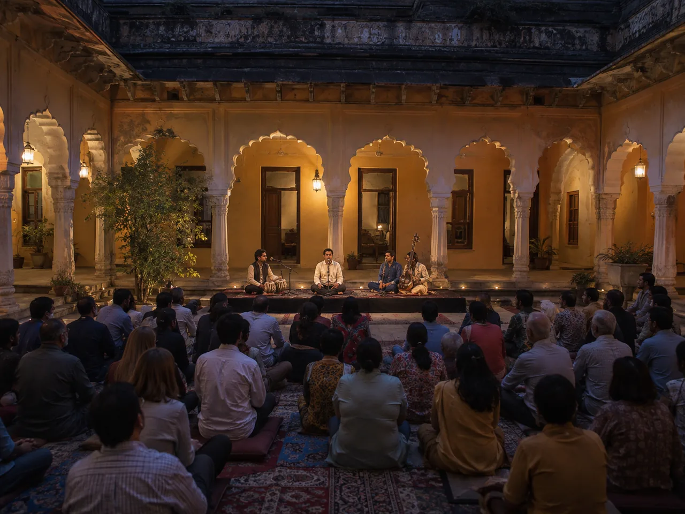

experience
Heritage Tours
Guided encounters with ancient landmarks, living neighbourhoods and the stories that shaped them.
Explore heritage toursExplore with Virsapur
Travel, learn, take part. Find your way into heritage through our tours, language classes, workshops and cultural collaborations.
experience
Guided encounters with ancient landmarks, living neighbourhoods and the stories that shaped them.
Explore heritage tours
workshop
Immersive learning that connects history, material culture and community knowledge.
Explore
project programme
Research, documentation and interpretation supporting the preservation of cultural heritage.
Explore
experience
Public programmes and partnerships that foster creativity, dialogue and cultural participation.
Explore
Language programme
French A1, German, Japanese, Chinese, IELTS preparation and speaking skills — explore language and communication with Virsapur.
Explore
experience
A synthetic ordered selection: Wazir Khan Mosque, then Taxila. This is not a real itinerary or bookable offer.
ExploreDates for your diary
Browse tours, language cohorts, workshops and cultural activities.
Local preview · Dates, prices and availability below are samples. Try a booking without making a real payment.
5 available activities

Official heritage trip · Sample
Rohtas & Taxila weekend: A fixed itinerary with a scheduled departure and a per-person price.
7:00 am
Lahore departure point
Workshops · Sample
Heritage sketchbook workshop: Join a scheduled workshops programme.
10:00 am
Lahore

Official heritage trip · Sample
Indus Cities & Thatta journey: A fixed itinerary with a scheduled departure and a per-person price.
7:00 am
Lahore departure point
Research & restoration · Sample
Documenting built heritage: Join a scheduled research & restoration programme.
10:00 am
Lahore
Cultural events · Sample
Culture in conversation: Join a scheduled cultural events programme.
5:00 pm
Lahore
No matching activities. Try another search or activity type.
Work with Virsapur
For programmes, research, education and cultural collaboration.
Contact Virsapur